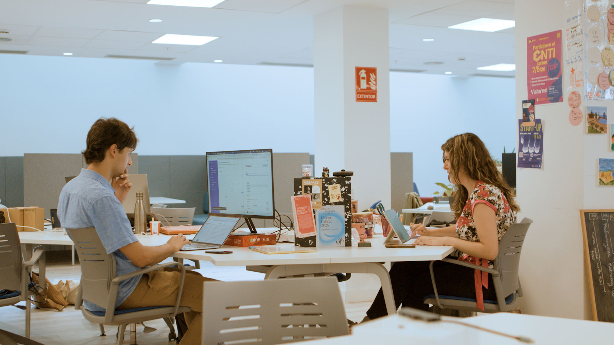
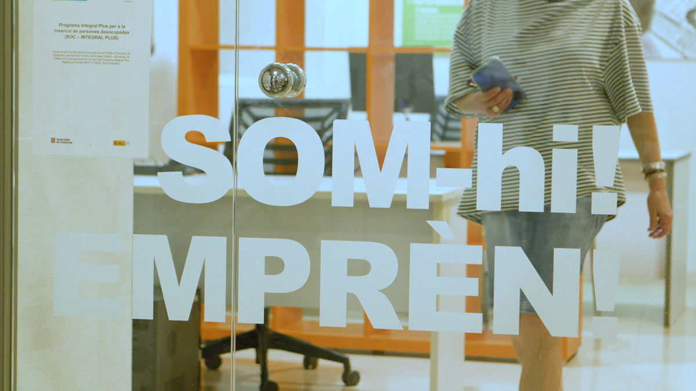
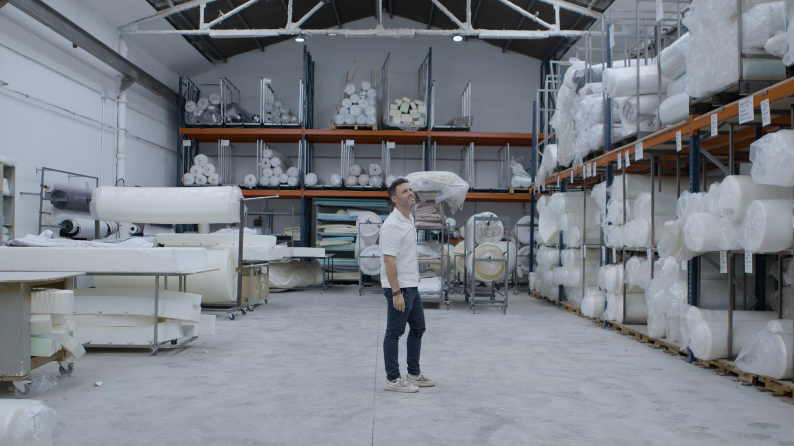

Empreses que arrelen,
territori que creix
La xarxa de Centres Locals de Serveis a les Empreses de la Diputació de Barcelona, amb 87 centres distribuïts per tota la província, acompanya emprenedors i empreses des de la idea inicial fins a la consolidació i el creixement
Crear una empresa és molt més que tenir una bona idea. Cal comprovar que el projecte és viable, decidir com finançar-lo, resoldre els tràmits administratius i fiscals, trobar espais adequats i, sobretot, disposar de suport durant els primers anys d’activitat. Aquesta és la funció de la xarxa de 87 Centres Locals de Serveis a les Empreses (CLSE), promoguda per la Diputació de Barcelona juntament amb els ajuntaments, consorcis i altres autoritats locals de la província. Durant el 2025, es van crear prop de 3.000 empreses amb el suport dels centres i més de 100.000 emprenedores i empresàries van utilitzar alguns dels seus serveis gratuïts.
Vilafranca del Penedès
Maria Mallafré
i Gemma Sala
Fundadores d’IKIGAI,
espai de criança i
fotografia infantil
El suport sol començar abans que l’empresa existeixi. Gemma Sala i Maria Mallafré tenien clara la idea d’Ikigai, un espai de criança i fotografia infantil a Vilafranca del Penedès, però necessitaven saber si la inversió era viable i quins permisos requeriria el projecte. “La idea estava clara, però teníem dubtes sobre la inversió en les instal·lacions, la reforma o els permisos. Estàvem una mica perdudes”, explica Gemma Sala.
L’anàlisi de viabilitat és precisament una de les eines que té més impacte en la consolidació posterior dels negocis. Les empreses que han fet aquesta anàlisi i han rebut un suport estructurat tenen una taxa de supervivència als tres anys del 63,7%, davant del 48,7% de les que no ho han fet.
Un altre exemple és Shevan, l’empresa de camperització de furgonetes que Sílvia Parreño va crear a Sabadell. A través dels serveis municipals, va accedir al lloguer subvencionat d’una nau industrial, però primer va haver de treballar en el pla de negoci i comprovar-ne la viabilitat. La xarxa disposa de 1.559 espais com naus, oficines i espais de coworking dissenyats per facilitar l’inici i el creixement de nous projectes.
Pel que fa a la posada en funcionament, els mateixos centres responen als dubtes que sorgeixen sobre els tràmits per constituir l’empresa, ja que estan autoritzats a tramitar les formes jurídiques més habituals de manera electrònica, gratuïta i en un termini de 48 hores, perquè són punts de Servei d’Emprenedoria.

Sabadell
Sílvia Parreño
Fundadora de SHEVAN,
empresa de camperització
de furgonetes
Talent empresarial en tot el territori
Un dels valors diferencials dels CLSE és la seva implantació territorial. Els serveis especialitzats no es concentren només als grans nuclis urbans, sinó que també arriben als municipis més petits. Daniel García Eril, fundador de la consultoria de projectes d’energies renovables DGE, va trobar al Consorci del Moianès l’assessorament que necessitava per resoldre qüestions fiscals, comptables i laborals. “Quan vaig decidir traslladar-me a Moià, no esperava trobar professionals tan qualificats en un àmbit tecnològic com el meu. He pogut desenvolupar un projecte empresarial que funciona per a tothom des de Moià”, explica.
Carol Segovia i Biel Pérez, fundadors de Movi, una aplicació que connecta l’oferta i la demanda de personal per a esdeveniments, també van descobrir serveis especialitzats a Sant Boi de Llobregat capaços d’acompanyar projectes vinculats a l’economia digital.

Acompanyament i formació
Aquesta xarxa no considera l’assessorament una intervenció puntual. Com explica Iolanda Repullo (CLSE de Sabadell), “els centres ofereixen itineraris que poden combinar formació, assessorament individualitzat, suport per a la consolidació i seguiment de l’evolució de l’empresa”. D’altra banda, la formació i el desenvolupament de competències és un altre dels grans paquets de serveis que els CLSE ofereixen a emprenedores i emprenedors. Segons Rosa Figueras, del CLSE de Vilafranca del Penedès, “la formació grupal es combina amb assessorament individualitzat. Bàsicament, ens centrem en dos àmbits: el model de negoci, però també en la persona, en el desenvolupament de les habilitats clau per emprendre”.

Granollers
Albert Mascaró
DESCANS MASCARÓ,
fabricant especialitzat
en equips de descans
Creixement i garantia de continuïtat
Els CLSE no treballen només amb nous negocis. Una part important de la seva activitat se centra en empreses que necessiten transformar-se, créixer o afrontar un relleu generacional. És el cas d’Albert Mascaró. Quan el seu pare es va jubilar, tenia previst liquidar el negoci familiar de matalassos. El CLSE de Granollers es va posar en contacte amb ell i li va oferir assessorament, formació i programes d’ajut. Finalment, va decidir donar continuïtat al negoci, modernitzar-lo i buscar nous mercats. Anys després, l’empresa va quadruplicar la facturació i la plantilla.
Els CLSE ofereixen diferents programes per donar suport a la continuïtat del negoci, ja sigui posant en contacte empreses viables que busquen continuïtat amb persones disposades a assumir-ne la gestió, fent que emprenedors acompanyin voluntàriament treballadors autònoms i microempreses en fase de consolidació, o bé ajudant les empreses a dissenyar i implementar plans de creixement amb consultors experts.
En resum, des de la creació d’una nova empresa fins a la seva transformació o transmissió, els Centres Locals de Serveis a les Empreses contribueixen a reforçar un teixit productiu més sòlid i distribuït per tot el territori.
Aquesta acció de la Diputació de Barcelona respon als Objectius de Desenvolupament Sostenible (ODS), que van ser proclamats per l’Assemblea General de Nacions Unides el setembre de 2015 i que formen part de l’Agenda 2030. La Diputació de Barcelona n’assumeix el compliment i desplega la seva acció de suport als governs locals de la província d’acord amb aquests ODS.
Crèdits
Producció: Edicions Clariana Coordinació: Martí Palma Disseny: Marta Sagarra Maquetació: Enric Abad Fotografies: Diputació de Barcelona
Un projecte de Brandslab. Godó Nexus